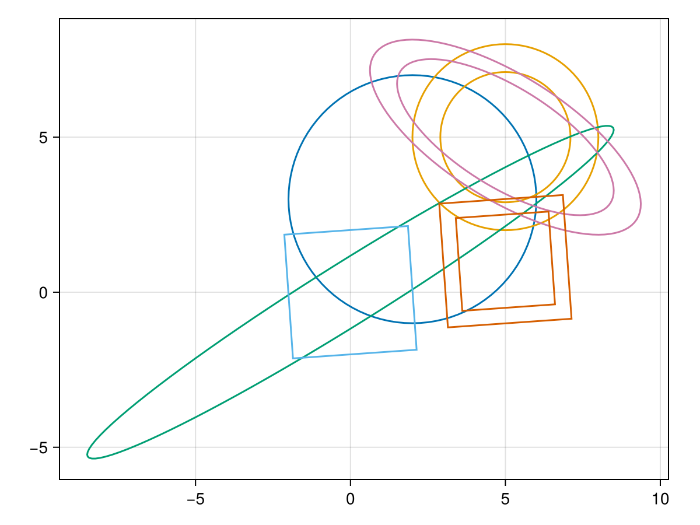
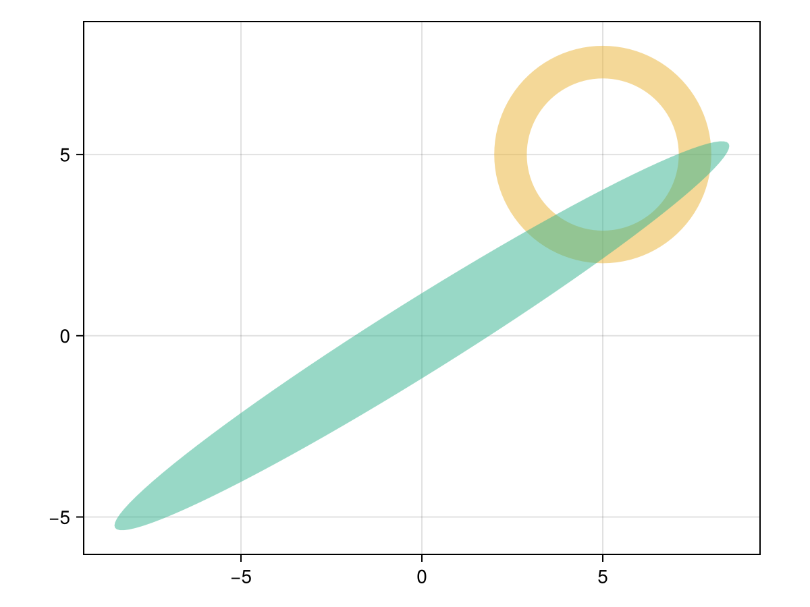
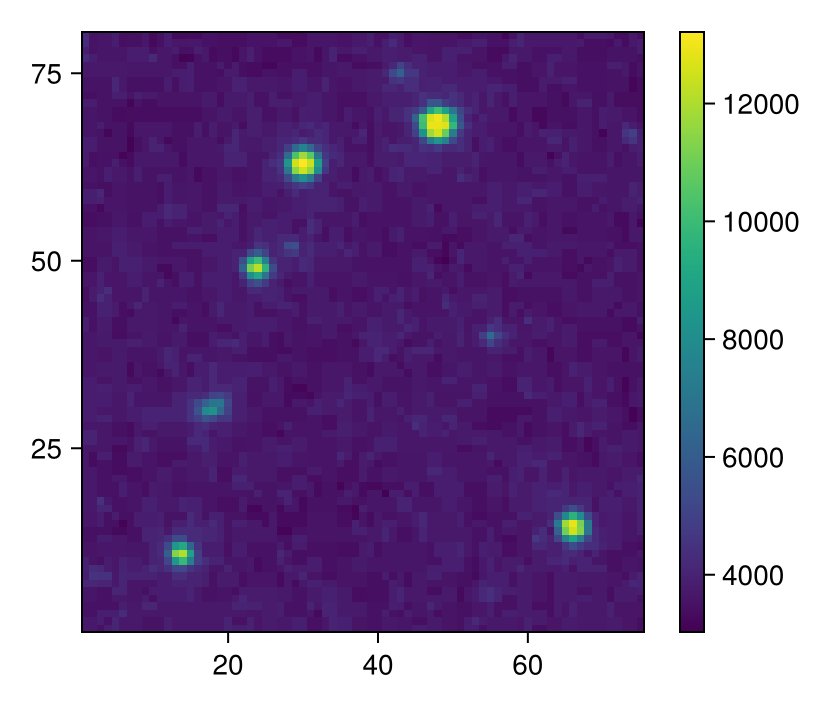
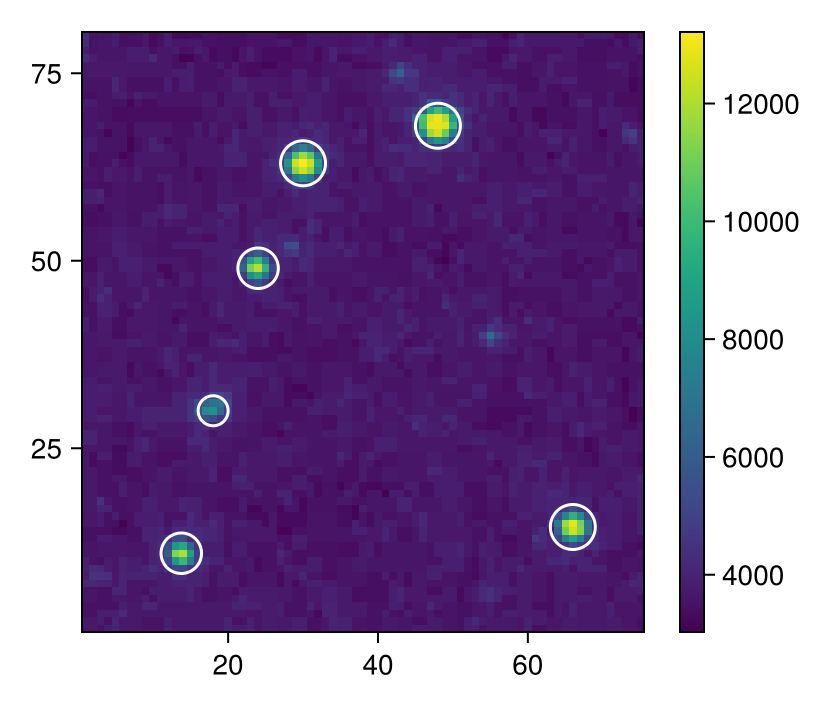
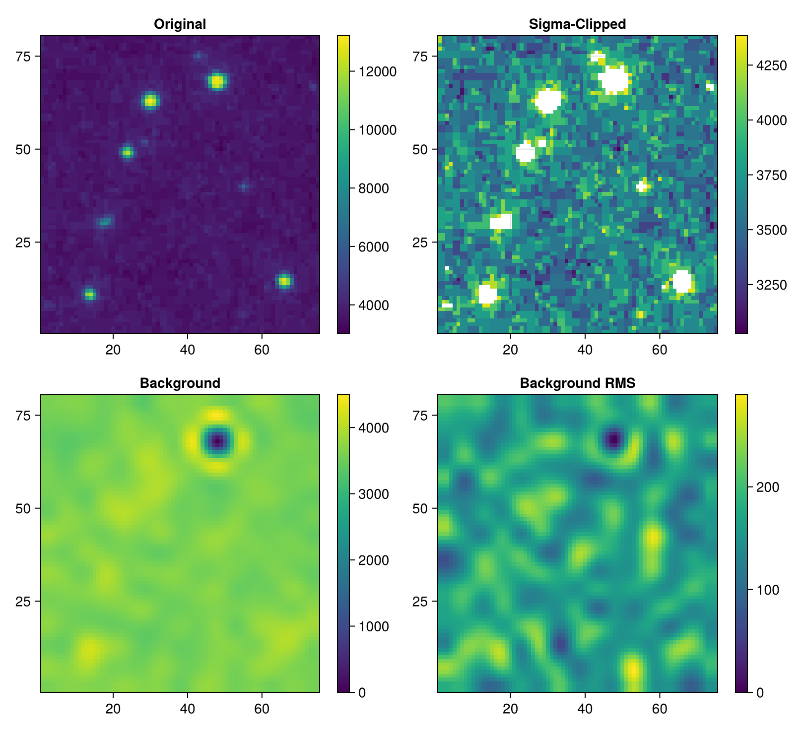
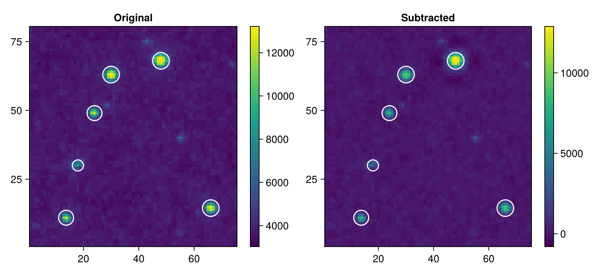

Examples
Plotting
Loading a Makie backend package (e.g. CairoMakie or GLMakie) alongside Photometry.jl activates a plotting extension covering all of our aperture types, so you can easily create overlays on your images. Apertures are drawn as outlines and can be passed directly to lines, lines!, and friends:
using Photometry
using CairoMakie
fig = Figure()
ax = Axis(fig[1, 1]; aspect = DataAspect())
lines!(ax, CircularAperture(2, 3, 4))
lines!(ax, CircularAnnulus(5, 5, 2.1, 3))
lines!(ax, EllipticalAperture(0, 0, 10, 1, 32))
lines!(ax, EllipticalAnnulus(5, 5, 4, 5, 2, -32))
lines!(ax, RectangularAperture(0, 0, 4, 4, 4))
lines!(ax, RectangularAnnulus(5, 1, 3, 4, 4, 4))
fig
Outlines are sampled at 101 points by default; pass a different count as a second argument (e.g. lines!(ax, ap, 501)) if you need finer sampling. A vector of apertures can also be plotted in a single call, as shown below.
For filled overlays, pass apertures to poly/poly! instead. Annuli are rendered as polygons with a genuine hole, so a translucent fill highlights exactly the region that contributes to the photometry:
fig = Figure()
ax = Axis(fig[1, 1]; aspect = DataAspect())
poly!(ax, CircularAnnulus(5, 5, 2.1, 3); color = Cycled(2), alpha = 0.5)
poly!(ax, EllipticalAperture(0, 0, 10, 1, 32); color = Cycled(3), alpha = 0.5)
fig
Simple Stars
Here is an example where we will find aperture fluxes for stars from M67. The dataset is provided as part of the astropy/photutils-datasets repository.
Let's start by downloading and showing our image
using Photometry
using CairoMakie
using FITSIO
# Load data in
url = "https://rawcdn.githack.com/astropy/photutils-datasets/8c97b4fa3a6c9e6ea072faeed2d49a20585658ba/data/M6707HH.fits"
hdu = FITS(download(url))
chunk = read(hdu[1], 81:155, 71:150)
function imshow!(gl::GridLayout, img; height = 300, kwargs...)
width = height * size(img, 1) / size(img, 2)
ax, p = heatmap(gl[1, 1], img; axis = (; width, height, kwargs...))
Colorbar(gl[1, 2], p)
return ax, p
end
imshow!(gp, img; kwargs...) = imshow!(GridLayout(gp), img; kwargs...)
function imshow(img; kwargs...)
fig = Figure()
ax, p = imshow!(fig.layout, img; kwargs...)
resize_to_layout!(fig)
return fig, ax, p
end
fig, ax, p = imshow(chunk)
fig
Makie's heatmap displays the first array axis along x, which matches the coordinate convention used by our apertures, so the image can be plotted as-is.
Now let's add some apertures!
positions = [
[48.0 , 68.0],
[30.0 , 63.0],
[24.0 , 49.0],
[18.0 , 30.0],
[13.75, 11.0],
[66.0 , 14.5],
]
radii = [3, 3, 2.7, 2, 2.7, 3]
aps = CircularAperture.(positions, radii)6-element Vector{CircularAperture{Float64}}:
CircularAperture(48.0, 68.0, r=3.0)
CircularAperture(30.0, 63.0, r=3.0)
CircularAperture(24.0, 49.0, r=2.7)
CircularAperture(18.0, 30.0, r=2.0)
CircularAperture(13.75, 11.0, r=2.7)
CircularAperture(66.0, 14.5, r=3.0)now let's plot them up
fig, ax, plt = imshow(chunk)
lines!(ax, aps; color = :white)
fig
and finally let's get our output table for the photometry
table = photometry(aps, chunk)Table with 3 columns and 6 rows:
xcenter ycenter aperture_sum
┌───────────────────────────────
1 │ 48.0 68.0 2.56016e5
2 │ 30.0 63.0 2.2897e5
3 │ 24.0 49.0 1.53114e5
4 │ 18.0 30.0 74779.6
5 │ 13.75 11.0 150105.0
6 │ 66.0 14.5 2.06232e5Stars with Spatial Background Subtraction and PSF Fitting
This example will be the same as Simple Stars but will add background estimation with BackgroundMeshes.jl and PSF fitting with PSFModels.jl.
# `sigma_clip` and `estimate_background` are reexported from BackgroundMeshes.jl for convenience
clipped = sigma_clip(chunk, 1, fill=NaN)
# Estimate 2D spatial background using boxes of size (5, 5)
bkg, bkg_rms = estimate_background(clipped, 5)
fig = Figure()
imshow!(fig[1, 1], chunk; title = "Original")
imshow!(fig[1, 2], clipped; title = "Sigma-Clipped")
imshow!(fig[2, 1], bkg; title = "Background")
imshow!(fig[2, 2], bkg_rms; title = "Background RMS")
resize_to_layout!(fig)
fig
Now, using the same apertures, let's find the output using the background-subtracted image
fig = Figure()
ax1, _ = imshow!(fig[1, 1], chunk; title = "Original")
ax2, _ = imshow!(fig[1, 2], chunk .- bkg; title = "Subtracted")
lines!(ax1, aps; color = :white)
lines!(ax2, aps; color = :white)
resize_to_layout!(fig)
fig
using PSFModels
function fit_psf(img_ap)
# Normalize
psf_data = collect(Float32, img_ap)
psf_data ./= maximum(psf_data)
# Set params
y, x = Tuple(argmax(psf_data))
fwhm = 5.0
params = (; x, y, fwhm)
# Fit
psf_params, psf_model = PSFModels.fit(gaussian, params, psf_data; x_abstol = 2e-6)
# Could also return a Tuple to display more information.
# Just returning fitted FWHM here for simplicity.
return psf_params.fwhm
end
table = photometry(aps, chunk .- bkg, bkg_rms; f = fit_psf)Table with 5 columns and 6 rows:
xcenter ycenter aperture_sum aperture_sum_err aperture_f
┌─────────────────────────────────────────────────────────────
1 │ 48.0 68.0 2.23198e5 412.483 4.07557
2 │ 30.0 63.0 1.17315e5 913.771 3.44676
3 │ 24.0 49.0 62451.0 1104.77 2.64662
4 │ 18.0 30.0 25505.5 685.247 2.37547
5 │ 13.75 11.0 56207.6 1088.76 2.54927
6 │ 66.0 14.5 94364.6 1151.61 3.14148